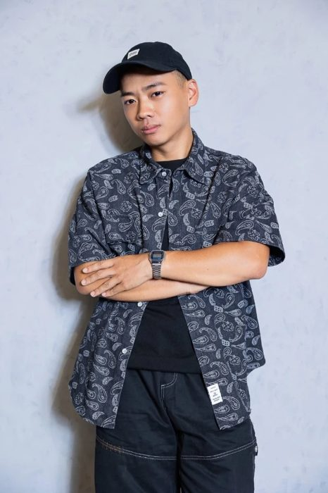

30 分鐘，
找出你的聲音卡在哪
講話喉嚨啞、聲音太小聲、唱高音卡住，想改善聲音卻不知道從哪開始？這些常常不是嗓子的問題，是用力的地方放錯了。台中南區一對一發聲課、唱歌課，也可以線上。

你是不是也這樣？
- 講話講一整天，喉嚨就啞、又乾又痛，只想閉嘴
- 聲音太小聲，講話被蓋過去，大聲一點就破
- 開會、帶客戶，音量一放大就破
- 錄 Podcast、主持久了，聲音就垮了
- 想在台中學唱歌，但唱高音只能硬扯，換聲點一定破
- 聽起來沒份量、很虛，想改善聲音卻找不到方法
- 一首歌唱不完，後半段就沒力氣
- 唱完歌喉嚨痛，聲音沙啞好幾天
問題不在嗓子天生弱
聲音會累、會啞，常常是因為該用力的地方沒用力，於是喉嚨被迫去做它不該做的工作。我們叫它「代償」。
代償改掉，聲音才會省力，也才撐得久。
我自己也是從零重建發聲方式走過來的，不是天生條件好的人，所以知道卡住是什麼感覺。
30 分鐘聲音結構檢測
- 聽你怎麼用聲音先聊你的情況，再聽你說話與發聲。
- 找出代償在哪看是哪個地方在多做、哪個地方沒出力。
- 帶你做到該用力的肌肉不講抽象的氣感，當場讓你感覺到那個位置。
- 告訴你接下來怎麼走適不適合繼續、怎麼安排，都直接講清楚，不硬推課程。
上課資訊
- 課程：一對一唱歌課、發聲課、說話聲音調整
- 地點：台中南區實體教室；也有線上唱歌課、線上發聲課
- 第一次：30 分鐘聲音結構檢測，就是體驗課，$600
- 適合：想學唱歌的初學者、高音唱不上去、唱歌喉嚨痛、講話喉嚨啞、聲音沙啞或太小聲
適合誰
老師與講師、業務與門市、主持人與 Podcaster、常開會的主管，也適合想在台中學唱歌、學發聲的初學者。不需要任何基礎。
不論你是想解決講話喉嚨啞、聲音太小聲，還是想唱上高音、唱完整首歌，都可以先從 30 分鐘檢測開始，我們一起看你的聲音怎麼用。
如果你的喉嚨有持續疼痛、突然失聲或長期沙啞，請先看耳鼻喉科。我做的是發聲習慣的調整，不是醫療。
關於我
我是蔡仲殷，大家都叫我肉包，在台中南區當一對一的唱歌老師、發聲老師。專注在發聲習慣改造，講話會啞和唱歌卡住一起處理，從你的聲音出發。
常見問題
講話講一整天喉嚨就啞，是嗓子天生比較弱嗎？
多半不是。常見原因是該用力的地方沒用力，變成喉嚨在做它不該做的工作。把這個分工改回來，聲音會比較省力。
完全沒學過唱歌也可以來嗎？
可以。多數人是因為工作講話多、或唱高音卡住才來，不需要任何基礎。
聲音檢測要多久、多少錢？
30 分鐘，$600。
有唱歌體驗課嗎？
有。第一次的 30 分鐘聲音結構檢測就是體驗課，$600，上完再決定要不要繼續。
在台中哪裡上課？可以線上嗎？
台中南區有實體教室，也接線上一對一。預約後我會用 LINE 告訴你確切地點。
聲音太小聲、講話沒人聽到，可以改善嗎？
聲音小常常不是天生，而是用力的位置不對，只好靠喉嚨硬撐。找到該用力的地方，音量與續航力會有不同。實際狀況要看每個人，檢測時我會直接告訴你。
台中想學唱歌或學發聲，要從哪裡開始？
建議先做 30 分鐘聲音結構檢測，確認你的聲音卡在哪，再決定怎麼上課。台中南區有實體教室，也可以線上。
講話常常喉嚨啞，要找發聲老師還是唱歌老師？
講話會啞和唱歌卡住，常常是同一個發聲習慣：該用力的地方沒用力，喉嚨在代償。我的課同時處理說話和唱歌，不用分開找。長期沙啞或喉嚨痛，請先看耳鼻喉科。
在台中找唱歌老師，南區有一對一的嗎？
有。我在台中南區教一對一唱歌課與發聲課，也可以線上。先做 30 分鐘聲音結構檢測，再決定怎麼上。
怎麼預約？
加入 LINE 官方帳號，直接在對話裡選時間。